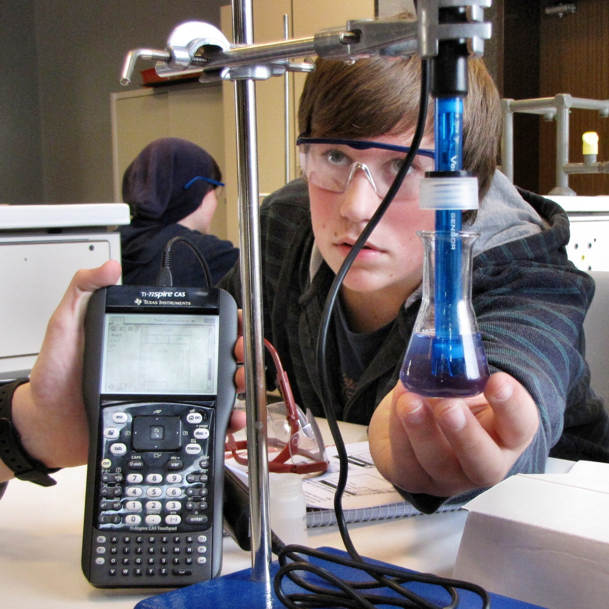
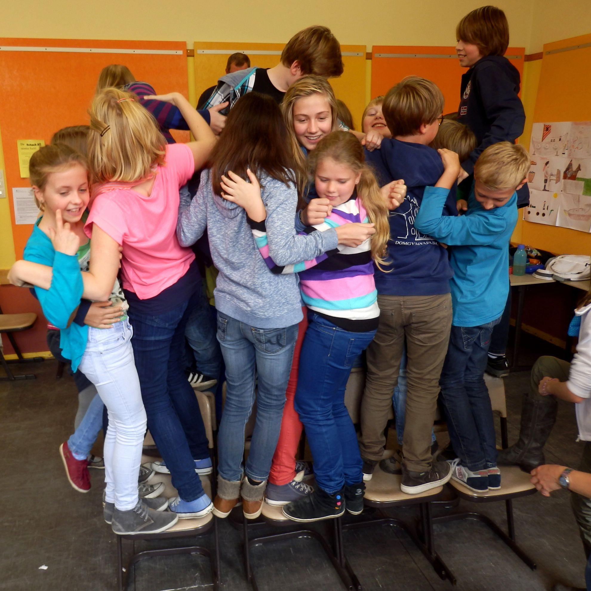

„Wir leiten uns gegenseitig zu kritischem Denken und selbstreflektiertem Handeln an und schaffen durch eigenständiges Lernen die Grundlage für Lebenstüchtigkeit und Studierfähigkeit.“
-
-

-

Unterricht
Der Unterricht ist nach einem neuen Stundenmodell am Vormittag in vier 67,5-Minuten-Stunden (Langstunden) organisiert. Durch eine spezielle Epochalisierung werden die sogenannten »Nebenfächer« überwiegend jeweils ein Schulhalbjahr wie ein Hauptfach mit zwei Langstunden (entspricht drei 45-Minuten-Std.) unterrichtet, sodass wir die Anzahl der Fächer pro Woche und pro Tag deutlich senken konnten.
Bei der Ausgestaltung der Stundentafel im Rahmen der eigenverantwortlichen Schule statten wir die jeweils neubeginnenden Fremdsprachen Englisch (ab Klasse 5), Latein, Französisch und Spanisch (ab Klasse 6) mit jeweils einer zusätzlichen Stunde aus. Ab Klasse 8 können Griechisch, Französisch, Spanisch und Latein zusätzlich als Wahlsprache belegt werden, wenn entsprechende Anwahlen vorliegen. Im Jahrgang 11 kann dann (G9) mit einer neuen zweiten Fremdsprache (i.d.R. Spanisch) begonnen werden.
Des Weiteren bieten wir in den Jahrgängen 5 und 6 die verstärkte Musikausbildung an, bei der die Schülerinnen und Schüler mit einer zusätzlichen Stunde in einer der drei Instrumentalklassen (Streicher, Bläser, Flöten) zunächst über zwei Jahre ein Instrument erlernen können.
Ab Klasse 9 führen wir einmal jährlich eine Berufsbörse mit externen Referenten durch und im Jahrgang 10 nehmen alle Schülerinnen und Schüler an einem zweiwöchigen Betriebspraktikum im Rahmen des Politik/Wirtschaft-Unterrichts teil.
In der Oberstufe wählen die Schülerinnen und Schüler eines der vier Profile (sprachlich, musisch/künstlerisch, gesellschaftswissenschaftlich oder mathematisch/naturwissenschaftlich). Als besondere Kurse im Bereich Sport können Rudern, Ski/Snowboard bzw. Surfen belegt werden.
Förderung
Jg. 5/6 Schüler helfen Schülern (ShS) in den Fächern Deutsch, Englisch, Mathematik – jeweils betreut durch eine Fachlehrkraft
ab Jg. 5 Hausaufgabenbetreuung im Rahmen des Ganztagsangebotes bis 15:15 Uhr, Crashkurse, AG »Fitte Hausaufgaben«
Schülerinnen und Schüler mit besonderem Förderbedarf werden imUnterricht mit den zur Verfügung stehenden Ressourcen individuell gefördert.